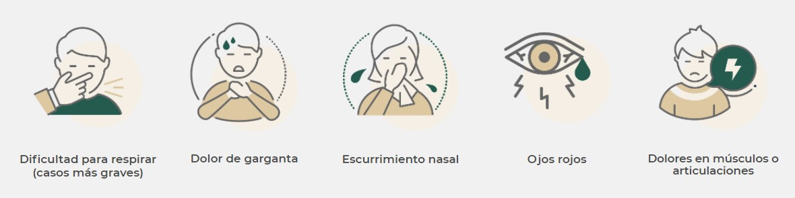

HOLA

CONTENIDO
Pulsa para ir a ¿Qué es un coronavirus?
Pulsa para ir a Evitar
Pulsa para ir a Cuidados para el enfermo
Pulsa para ir a Como se transmite
Pulsa para ir a Enlaces
¿Qué es un coronavirus? ¿Qué es la COVID-19?
Los coronavirus son una gran familia de virus, la mayoría de ellos inofensivos para los humanos. Se conocen cuatro tipos que causan resfriados y otros dos que causan severas infecciones en los pulmones: el Síndrome Respiratorio Agudo Grave (SARS) y el Síndrome Respiratorio por Coronavirus de Medio Oriente (MERS). El nuevo coronavirus se conoce como SARS-CoV-2 por sus similitudes con el virus que causa el SARS y fue identificado a principios de enero de 2020 por científicas y científicos chinos.
Este virus causa la enfermedad llamada COVID-19. A diferencia de la influenza, no hay una inmunidad previa conocida, aún no hay vacuna, no hay tratamiento específico y se asume que todas las personas son susceptibles al virus. Como todos los virus, el SARS-CoV-2 necesita que las células de los seres vivos se multipliquen. Este virus parece apuntar a las células de los pulmones y posiblemente también a otras del sistema respiratorio.
MÉXICO Y EL COVID-19
twitter oficial de Salud de México
Tweets by SSalud_mx
EVITAR
Es importante protegerse y proteger a las demás personas. Al igual que con otros coronavirus, la infección por pequeñas gotas parece ser el principal modo de transmisión. El virus entra en el cuerpo a través de la boca o la nariz. Esto puede suceder al respirar gotas infectadas o al tocar una superficie en la que hayan caído las gotas y después tocarse la boca o la nariz. Por lo tanto, medidas simples de control de infecciones como el lavado de manos y la llamada "etiqueta respiratoria" (toser o estornudar en un pañuelo o en la parte interna del codo), son eficaces e importantes medidas de prevención.
La higiene de las manos es primordial, intenta lavar tus frecuentemente con agua y jabón. Usa suficiente jabón y asegúrate de lavar todas las partes de ambas manos durante al menos 20 segundos. Si no hay suciedad visible en tus manos, también es una buena opción usar un gel a base de alcohol.Si toses o estornudas, cúbrete la boca y la nariz con un pañuelo de papel o con la parte interior del codo. Tira de inmediato los pañuelos usados a la basura, al igual que las mascarillas usadas, y lávate las manos. A esto se le llama etiqueta respiratoria. Es importante que permanezcas en casa si estás enfermo y que evites el contacto con otras personas.
También es importante practicar el distanciamiento físico, que se refiere a mantener una distancia física con otras personas, y a evitar lugares concurridos y reuniones de grupos numerosos de personas.
Cuidados para el enfermo
Si tienes síntomas compatibles con coronavirus y no tienes dificultad para respirar o perteneces a uno de los grupos de riesgo, no vayas al doctor. Solo quédate en casa y haz lo siguiente:
No te automediques.
No saludes de mano, beso o abrazo y mantén tu sana distancia respecto a quienes conviven contigo.
Lávate las manos frecuentemente con agua y jabón, al menos 20 segundos, o desinféctalas con gel.
Aliméntate sanamente, con verduras y frutas y toma al menos ocho vasos de agua simple.
Laven vasos y cubiertos con agua, jabón y cloro.
Una persona debe sospechar de COVID-19 cuando presenta al menos dos de los siguientes síntomas:

Y que se acompaña de alguno de los siguientes:
 ¿Cómo se transmite?
Los coronavirus humanos se transmiten de una persona infectada a otras:
°a través de las gotículas que expulsa un enfermo al toser y estornudar
°al tocar o estrechar la mano de una persona enferma,
°un objeto o superficie contaminada con el virus y luego llevarse las manos sucias a boca, nariz u ojos.
Enlaces
VACUNAS
INFORMACIÓN SOBRE EL COVID MUNDIAL

-orlando isaac mozqueda lopez,7/09/21